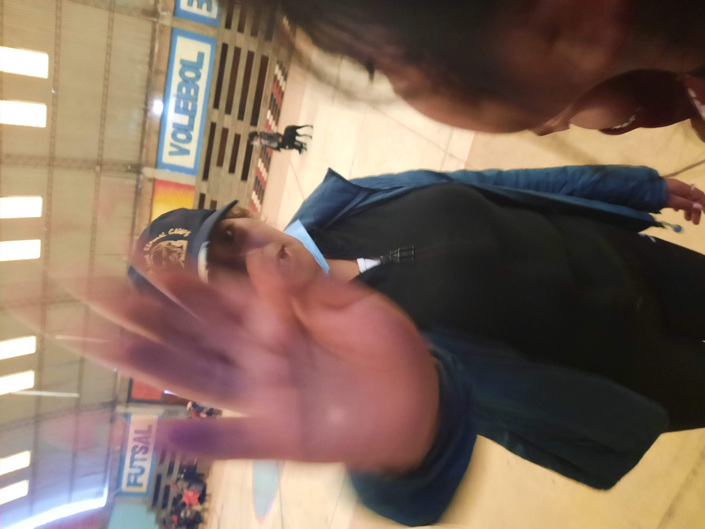

CIBERACOSO
El control es tuyo
CIBERACOSO
¿QUE ES?
El ciberacoso es el uso de la tecnología, como Internet y teléfonos móviles, para acosar, intimidar o amenazar a otras personas. Puede incluir mensajes de texto ofensivos, difusión de rumores falsos en línea o incluso la creación de perfiles falsos para acosar a alguien en las redes sociales. Es una forma seria de abuso que puede tener graves consecuencias emocionales y psicológicas para las víctimas.

INFORMACIÓN adicional


- MANIFESTACIONES DEL CIBERACOSO:
El ciberacoso adopta diversas formas, desde ataques verbales en redes sociales hasta la suplantación de identidad en línea. Su diversidad hace que sea crucial analizar cada modalidad para entender la amplitud de este problema y, por ende, proponer soluciones adecuadas.El concepto de ciberacoso o ciberbullying no nos pasa desapercibido desde hace ya algún tiempo. Nacido con internet, el ciberacoso ha ido evolucionando al compás de las Tecnologías de la Información y la Comunicación (TIC). Tanto es así, que esta forma de bullying online ha acabado por convertirse en una práctica que puede ser tanto independiente como complementaria al acoso escolar convencional. Por ello es tan importante conocer las distintas fórmulas y manifestaciones del ciberacoso.
- Impacto en la Salud Mental: La violencia digital no es solo una cuestión virtual; sus secuelas trascienden la pantalla, afectando la salud mental y emocional de quienes la experimentan. La ansiedad, depresión y otros problemas psicológicos derivados del ciberacoso resaltan la necesidad de una respuesta integral. Cuando sufres ciberacoso puedes sentirte avergonzado, nervioso, ansioso y tener dudas sobre lo que la gente dice o piensa de ti. Esto puede llevarte a aislarte de tus amigos y familiares, a tener pensamientos negativos y a sentirte culpable por las cosas que has hecho o dejado de hacer, y a creer que te están juzgando negativamente. También es habitual sentirse solo y abrumado, y sufrir dolores de cabeza, náuseas o dolores de estómago frecuentes.
¿QUÉ SE HACER?
Si estás siendo víctima de ciberacoso, es importante que tomes medidas para protegerte:
- No respondas ni reacciones emocionalmente ante los acosadores.
- Guarda evidencia del ciberacoso, como capturas de pantalla o mensajes.
- Bloquea a los acosadores en todas las plataformas en las que te están molestando.
- Informa del ciberacoso a la plataforma o servicio donde está ocurriendo.
- Habla con alguien de confianza, como un amigo, familiar o profesor, sobre lo que estás experimentando.
- Considera buscar ayuda profesional si el ciberacoso está afectando tu bienestar emocional.
- Recuerda que no estás solo y que hay recursos y apoyo disponibles para ayudarte a superar esta situación.